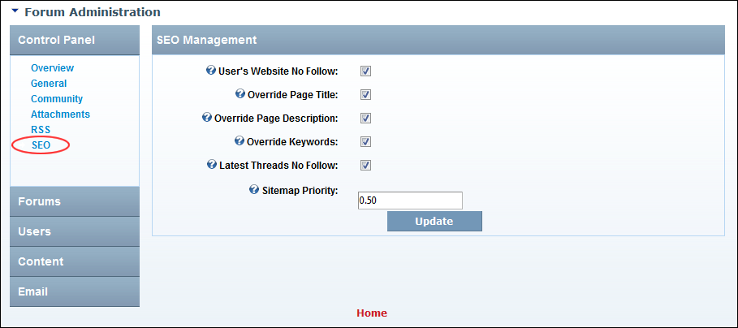

Configuring the Forum Search Engine Optimization
How to configure Search Engine Optimization (SEO) settings on the Forum module.
- Go to the Forum Administration page. See "Navigating to the Forum Admin Page"
- In the left-hand panel, select Control Panel > SEO. This displays the SEO Management window.
- At User's Website No Follow, to indicate to search engines that links entered in user posts should be indexed as part of this website - OR - to indicate that search engines should index these links as relevant to the site content and ranking. This option relates to both user posts and user profile.
- At Override Page Title, to override the page name with the forum name or thread name - OR - to disable.
- At Override Page Description, to override the page description – OR - to disable.
- At Override Keywords, to override the page keywords with ones pulled from within the module – OR - to disable.
- At Latest Threads No Follow, to indicate that the destination hyperlinks in the initial group view SHOULD NOT be afforded any additional weight or ranking by user agents which perform link analysis upon web pages (E.g. search engines). Note: This applies to the links in initial group view (6,12,24,48, view latest threads) typically seen when first viewing a page with the forum module placed on it - OR - to disable.
- In the Sitemap Priority text box, enter the SEO Sitemap priority per thread (this number must be between 0.0 and 1.0). The default is 0.5. Note: This will only be enabled if the Forum SEO Sitemap provider is installed.
- Click the Update button.

Configuring the Forum Search Engine Optimization Settings